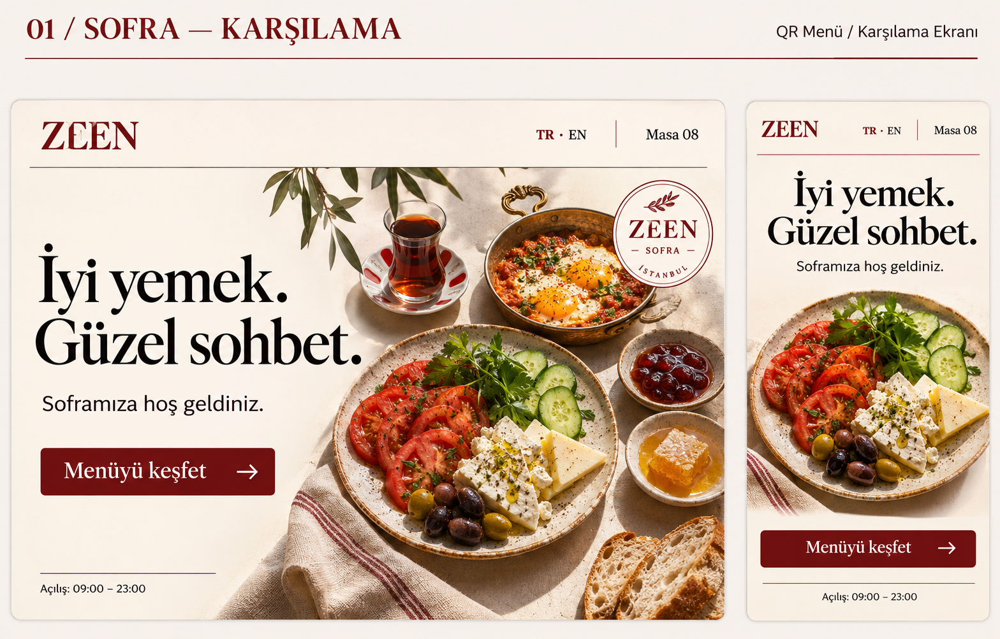
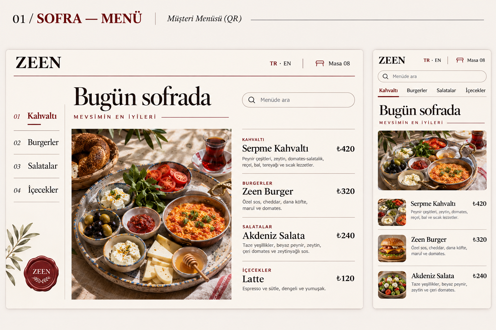

TASARIM 01
Sofra
Editoryal · Sıcak · ZamansızKrem kâğıt hissi, bordo çizgiler ve güçlü bir sofra fotoğrafı. Bir yemek dergisinin kapağı gibi karşılar; menüde aynı kimlik sade ürün satırlarına dönüşür.


Telefonda fotoğraf ve tek giriş düğmesi dikey akar; masaüstünde başlık ile fotoğraf ayrılır. Menüde kategori başlıkları ve fiyatlar kolay taranır.
Benim değerlendirmem: Klasik ile özgün arasında en dengeli seçenek.